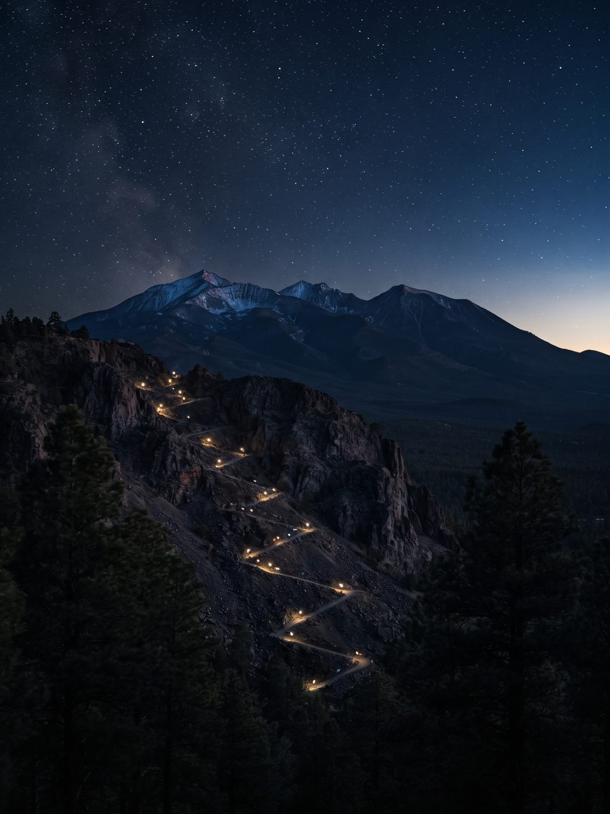
Calm is stored,
not summoned.
Practices, films and stories for a good relationship with stress, carried from the mountains of the world.
The Swiss Alps, mile 95
The San Francisco Peaks, before dawn
A good relationship with stress helps you reach for the stars, and cross the hardest ground with songs and stories.
Tony SkrelūnasTomorrow, before the noise.
Two minutes each weekday morning, in your inbox. Free.
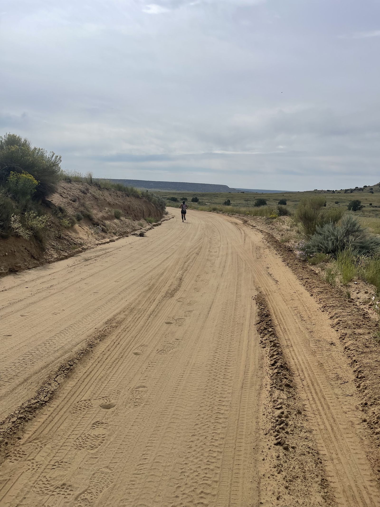
We are entering hard country again.
It does not call for harder people. It calls for steadier ones.
The far messengers crossed deserts and oceans with what mattered, and arrived with it whole. They did not wait for easy weather. They trained before the crossing. Calm is stored the same way: a little, every morning.
Two minutes before the phone, before the plans. A short practice in your inbox at 5:30 in the morning, Arizona time, Monday to Friday.
What brings you here today?
Mountains of the world
The same breath works on every one of them.
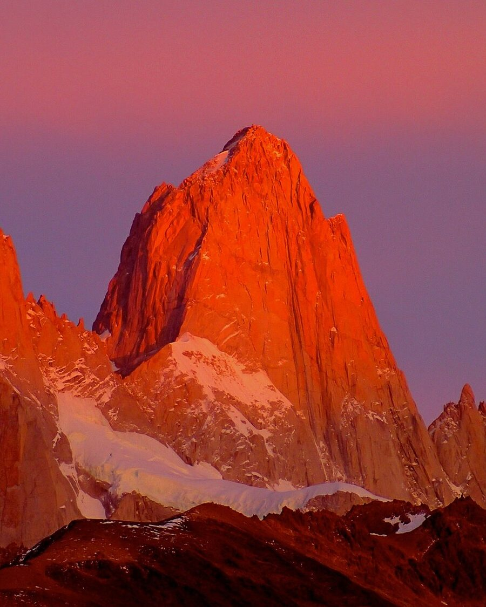
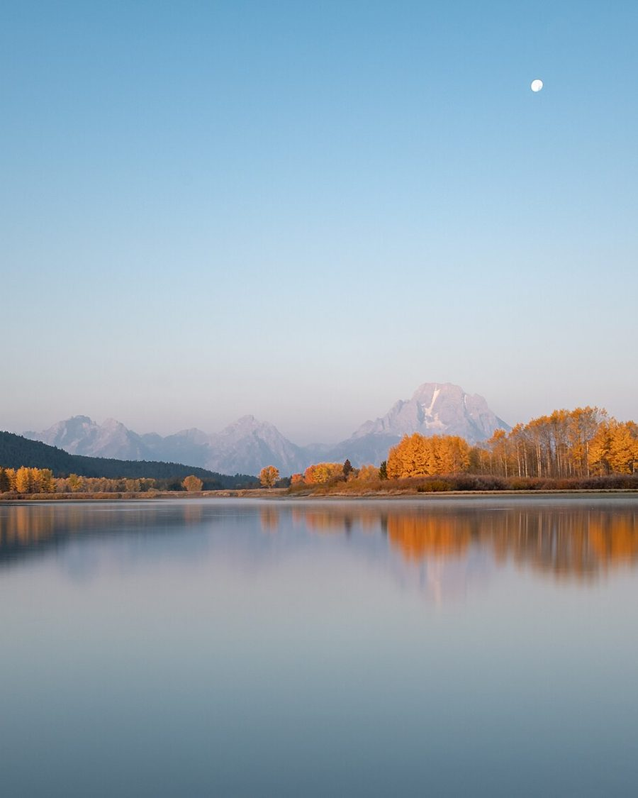

Steady when it counts.
On the first tee, on mile 95, in the boardroom. The books carry the stories, and the tools inside them.
The booksThe Mountain Within
Three short films for hard days. Free to watch, with captions in English, Español, 日本語 and Lietuvių.

If today is heavy: in the United States and Canada, call or text 988. In the United Kingdom and Ireland, call Samaritans on 116 123. Anywhere else, findahelpline.com.
Lietuviškai. 日本語で。
The films and readings in Lithuanian and Japanese.
Photographs in the Lithuanian films: Tony Skrelūnas; Wikimedia Commons: Aidas U. and VietovesLt (CC BY 3.0), Wojsyl (CC BY-SA 3.0), Scotch Mist and Bcecilija (CC BY-SA 4.0), Saulius Gruodis, Lithuanian State Central Archives (CC BY 4.0), Haragayato (CC BY-SA 4.0), others public domain or CC0; Unsplash. Under the Lamplight: the author’s own and original scenes made for the film; Wikimedia Commons (stone lantern by Chi King, CC BY 3.0; others CC0 or public domain); Unsplash.
Try it now.
One minute.
In for four, hold for four, out for six, hold for four. Three rounds. Nothing to download.
That is how calm is stored, one breath at a time. Do it with us tomorrow morning.
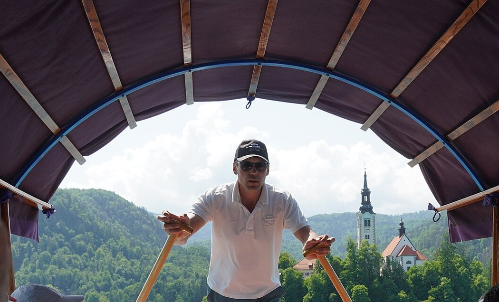
Morning Water
A guided session for the start of the day. Free to hear.
Listen free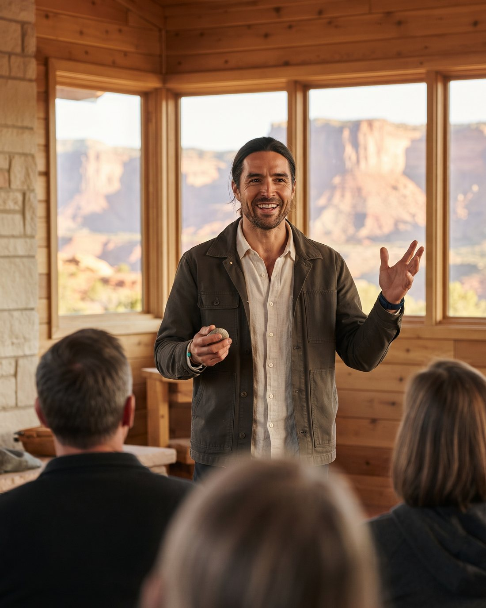
For teams, companies and boards.
Talks, workshops and coaching on stress, high achievement and the long crossing.
Bring it to your teamWe are the far messengers now.
Eight rooms inside the membership.
- First LightRise before the noise. A short practice to open the day.
- The PracticeThe path deepens as you return.
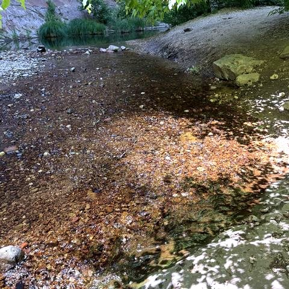
- The Listening RoomGuided sessions, from two minutes to forty-three.
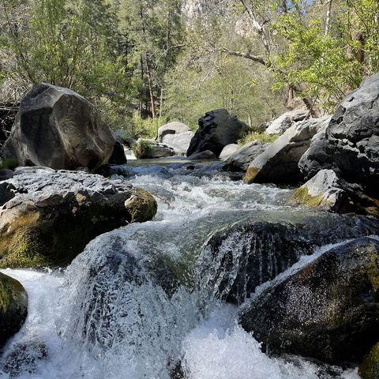
- Eight WeeksOne training a week, in the order every tradition used.
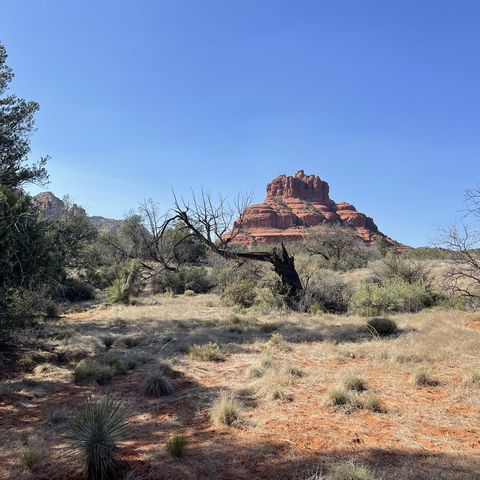
- The FilmsThe films of the Eight Weeks, and The Mountain Within.
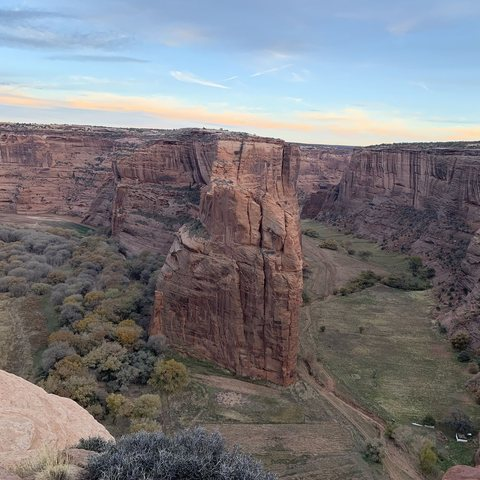
- The Game RoomTwo games from the books. Play a crossing, then sit by the fire.
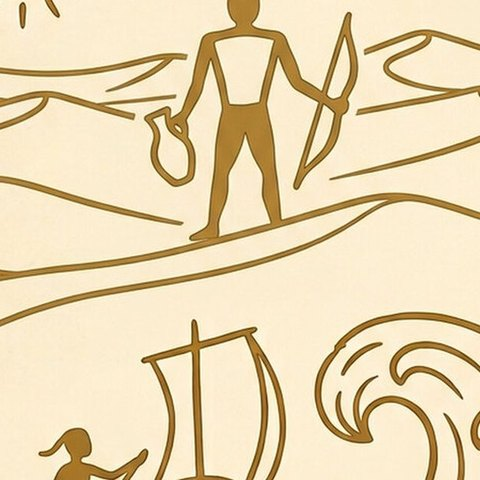
- The Story RoomA cold winter evening in the mountains, the fire lit. This is when the stories are told.
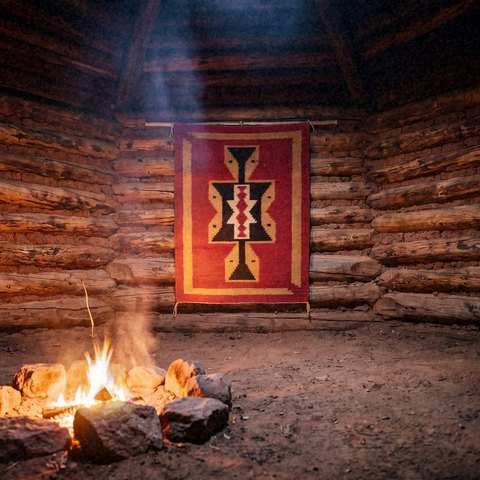
- The Reading RoomReadings from the books, and the far messenger writings.
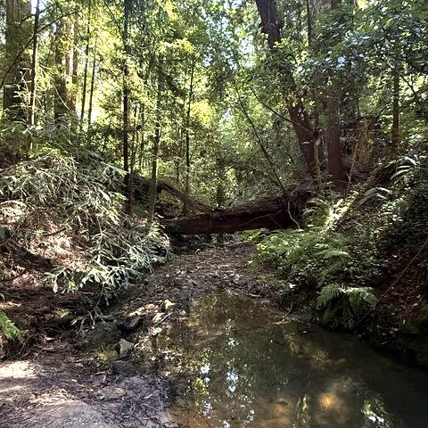

A stone you pass is a covenant.
Send the films to someone carrying a lot this year. They are free, and they are made to be passed on.
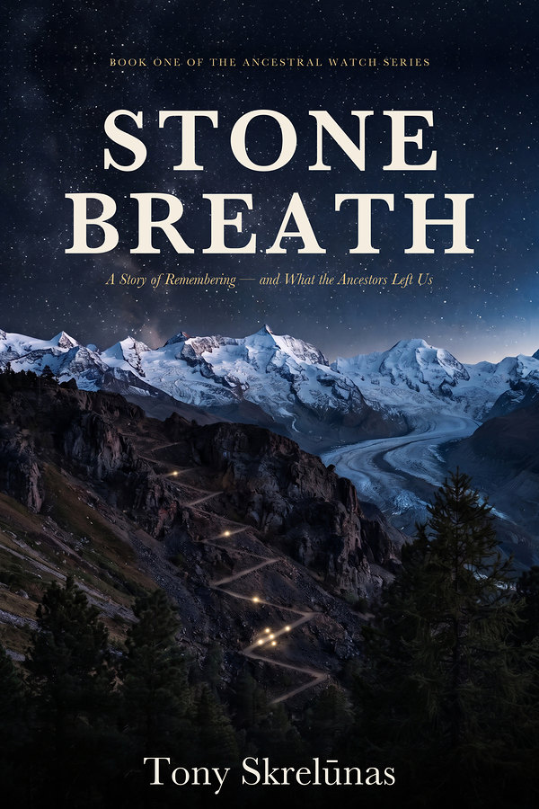
$79 a year, or $12 a month.
Membership keeps this work going and carries it to the ones who come after. It opens every session and voice note in the Listening Room in full, the Eight Weeks, the films and the readings from the books.
The year comes to about $6.58 a month. Cancel anytime, on your own, from your account.
Not ready to join? Begin free with First Light. Bought one of the books? Your first month is free.